Известни играчи
| Име и прякор(и) |
Страна | |
|---|---|---|
| Стивън Хендри Златното момче, Маестрото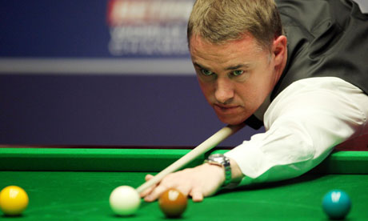 |
Шотландия | Доминира в професионалния снукър през години, подобно на Стив Дейвис през 1980-те. По време на своята кариера по това време той се доказва като един от най добрите строители на брейкове. През 1990-те години той прави повече от 550 сенчъри брейкове и става играчът с най-много максимални брейкове- 8. По-късно Рони О'Съливан подобрява този му рекорд. Стивън Хендри има 7 спечелени световни първенства и прекарва 9 сезона на 1-во място в световната ранглиста. От много почитатели на снукъра, Хендри е смятан за най-добрия играч в историята на спорта. Отказва се от снукъра на световното първенство през 2012 година. В кариерата си има 11 максимални брейка, като последният е от 2012 година на откриващия двубой на световното първенство срещу Стюарт Бингам. |
| Рони О'Съливан Ракетата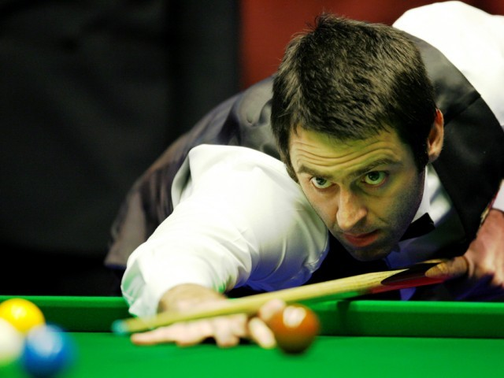 |
Англия | Рони О'Съливан получава своя прякор Ракетата, заради изключително бързия стил на игра, който практикува през 1990-те години. Известен е и с петте си световни титли (от 2001, 2004, 2008, 2012 и 2013г.), както и като автор на трите най-бързи максимални брейка от 147 точки. Два от тези брейкове той постига на световното първенство през 2003 г., което го прави единственият играч, постигал повече от 2 максимален брейк в Театър Крусибъл, където се провежда световното първенство. О'Съливан е известен също със своето умение за игра и с лява, и с дясна ръка. Той е определян от много хора като един от най-талантливите играчи в снукъра. На 15 декември 2007-ма изравни рекорда на Хендри от 8 максимални брейка, а на 28 април 2008-ма го подобрява (в мач от Световното първенство срещу Марк Уилиямс), с което става състезателят с най-много максимални брейкове - 9. До 2012 година О`Съливан е притежател на 11 максимални брейка, изравнено постижение със Стивън Хенри. |
| Стив Дейвис Кюлчето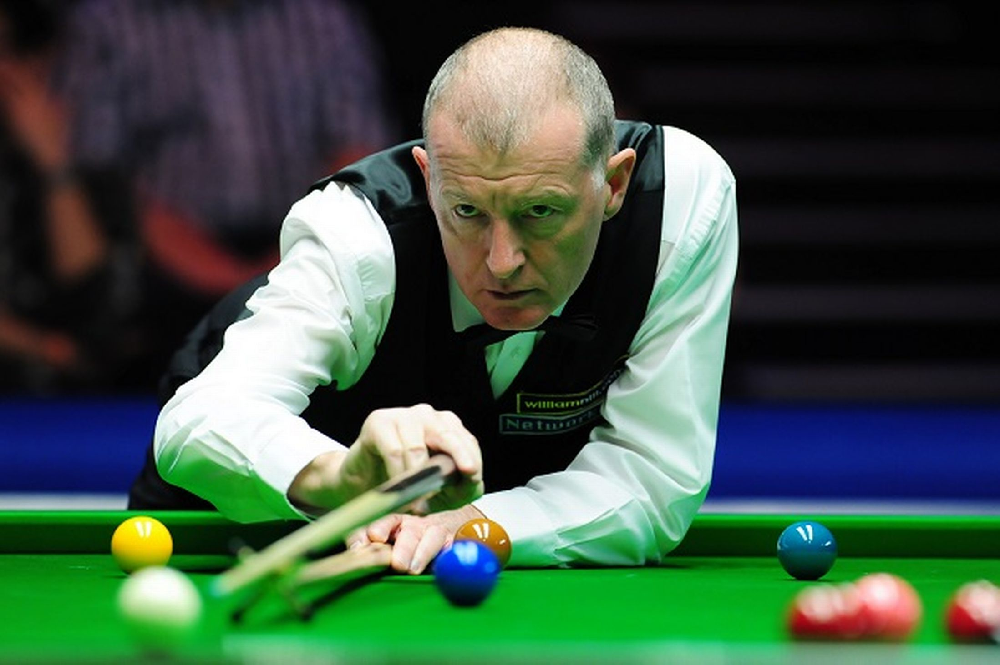 |
Англия | Стив Дейвис доминира в световния снукър през 1980-те години като значително повишава нивото на играта, а с това и популярността на снукъра. Той е първият ясно изразен фаворит в телевизионната ера на снукъра. Той печели 6 световни първенства и става първия играч в историята на снукъра, станал известен с добрата си защитна игра. През 1990-те години неговото място е заето от Стивън Хендри, който печели общо 7 титли. Дейвис държи рекорда за най-голям брой титли от професионални състезания по снукър - 73. |
| Марк Уилямс The Welsh Potting Machine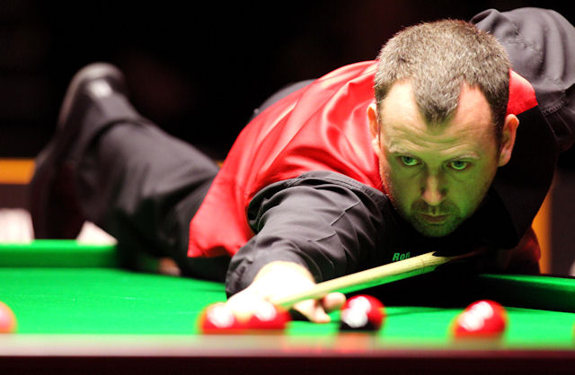 |
Уелс | Марк Уилямс става двукратен световен шампион от 2000 и 2003г. и е смятан от някои за един от най-добрите в отбелязването на точки играчи. След два сравнително по-слаби сезона Уилямс печели Откритото първенство по снукър на Китай през 2006г. |
| Джон Хигинс Магьосникът от Уишоу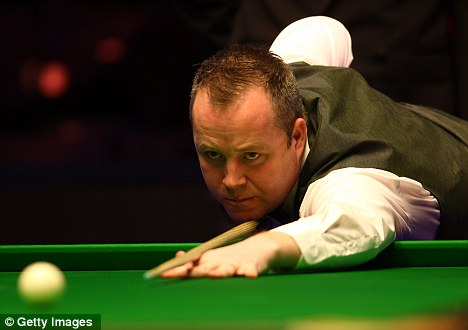 |
Шотландия | Джон Хигинс е четирикратен световен шампион от 1998, 2007, 2009 и 2011 г. Той държи рекорда за най-много сенчъри брейкове в поредни фреймове на един мач - 4, както и рекорда за най-много последователни точки, без противникът му да отбележи дори 1 точка - 494. И двата рекорда той постига на финала на състезанието Гран При през 2005г. срещу Рони О'Съливан. |
| Кен Дохърти Хитрия Кен, Кен-до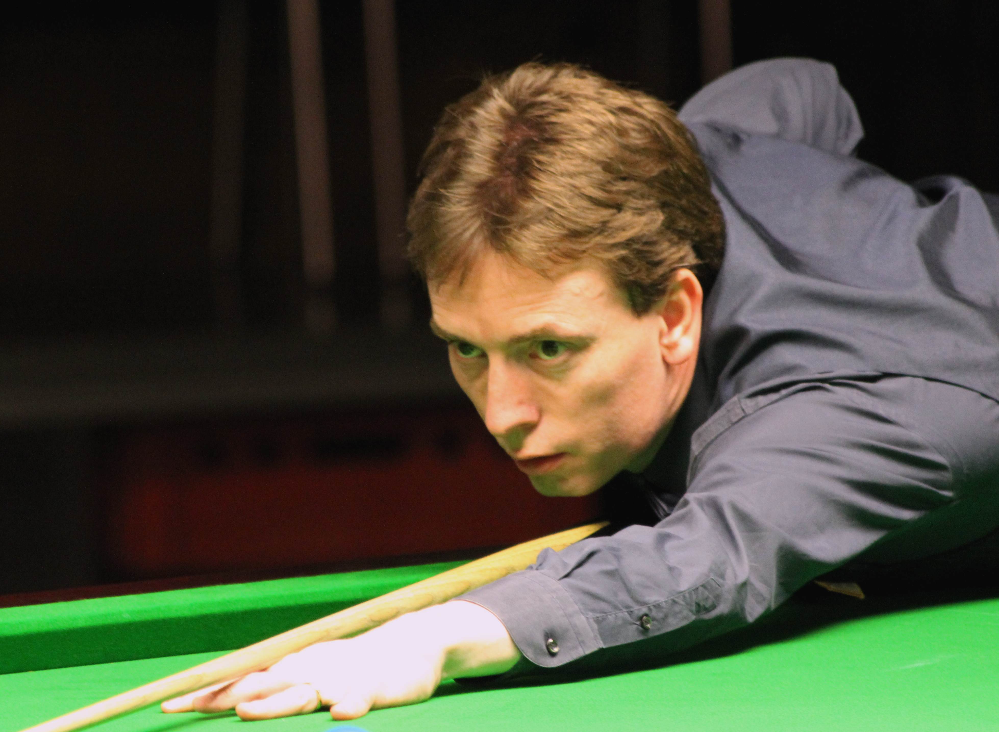 |
Ирландия | Кен Дохърти е единственият играч, който е успявал да спечели ветовното първенство по снукър на младежко (1989), аматьорско (1989) и професионално (1997) равнище. |
| Питър Ебдън Скелетор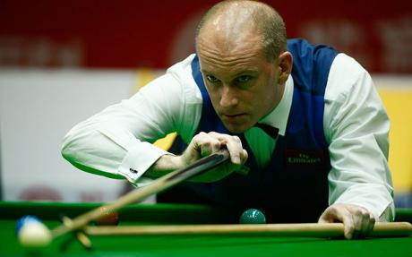 |
Англия | Питър Ебдън е световен шампион от 2002г. Той достига финала на световното първенство през 2006 г., където е победен от Греъм Дот. |
| Греъм Дот Джобното динамо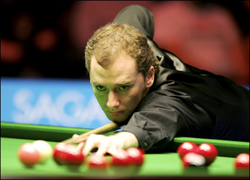 |
Шотландия | Греъм Дот достига до финал на световното първенство по снукър през 2004 г., където е победен от Рони О'Съливан. През 2006г. той отново достига до финал, но този път побеждава Питър Ебдън. Това става първата победа от професионално състезание за Дот. |
| Джими Уайт Вихъра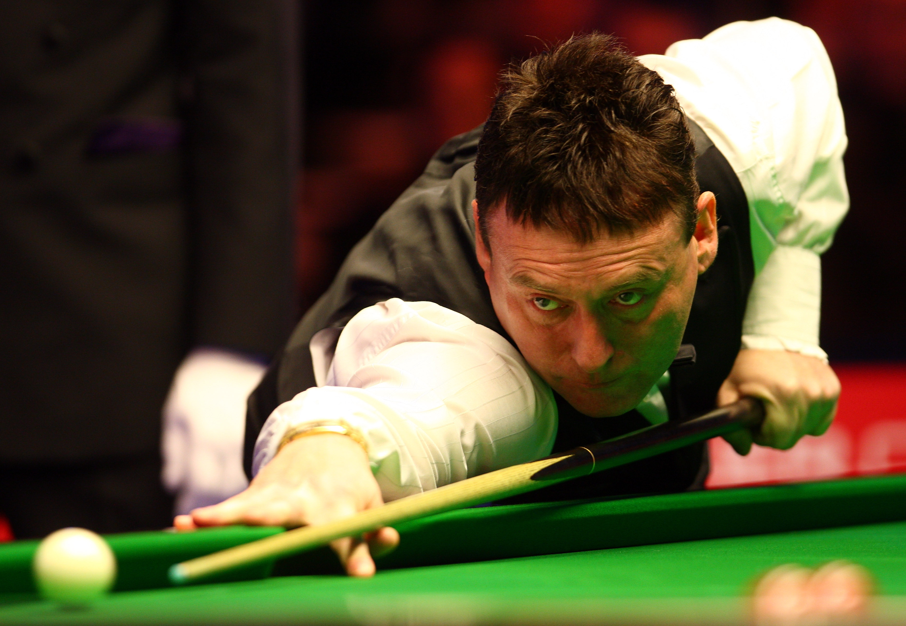 |
Англия | Джими Уайт е безспорно най-успешният играч в снукъра, който никога не е успявал да спечели световно първенство. Уайт достига до финала на състезанието 6 пъти, но нито веднъж не успява да стане световен шампион. През своята кариера той печели немалко други професионални състезания и става един от най-обичаните от публиката играчи. Бързата и емоционална игра на Рони О'Съливан често е сравнявана със стила на игра на Джими Уайт от по ранните години на кариерата му. Джими Уайт е известен с добрия си контрол върху топката бияч и добрите си позиционни удари. |
| Джо Дейвис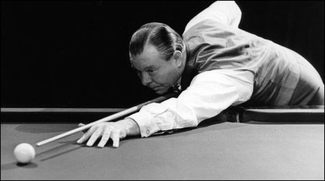 | Англия | Джо Дейвис е един от хората с най-голям принос за развитието на съвременния снукър. Той е един от инициаторите за провеждането на първото световно първенство през 1927г. и става и победител в това първенство. Негов е рекорда за най-много световни титли - 15, въпреки че Дейвис постига това през първата половина на 20 век, когато има по-малко добри играчи. |
| Фред Дейвис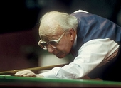 | Англия | Фред Дейвис е по-малкият брат на Джо Дейвис и печели 9 световни титли. |
| Алекс Хигинс Hurricane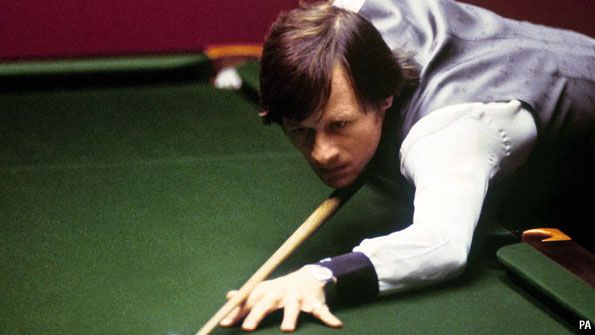 |
Северна Ирландия | Алекс Хигинс става известен със своя бурен и силно емоционален стил на игра и поведение. Той е известен с невъздържаното си поведение около масата за снукър. Начинът на игра на Алекс Хигинс помага много за популяризирането на снукъра. Той печели две световни титли, през и 1982г. Заедно с Рони О'Съливан са смятани за най-големите природни таланти в новата история на снукъра. |
| Пулман 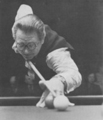 | Англия | Джон Пулман доминира в професионалния снукър през 1960-те години и печели 8 световни титли между 1957 и 1968г. |